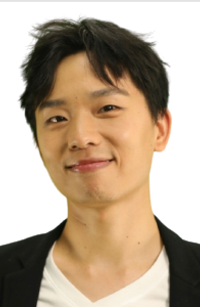

Doctorat en TAL
Informatique / NLP à i3S & Inria : argumentation, justifications pour le fact-checking, jeux de données et protocoles d’évaluation.
TAL, humanités numériques & montagne.
Doctorat en informatique · Ingénieur à la MSHS Sud-Est · Moniteur national de ski & snowboard.
À propos

Je construis des outils d’IA et d’humanités numériques utiles à la recherche, à l’enseignement et à la médiation — et je transmets aussi des compétences de montagne et de pratique personnelle.
Doctorat en informatique spécialisé en Traitement Automatique des Langues, réalisé au laboratoire i3S & Inria. Aujourd’hui ingénieur à la MSHS Sud-Est, j’accompagne plus de 18 laboratoires sur leurs projets numériques.
Parcours
Comprendre, construire, transmettre — en laboratoire, sur le terrain numérique, et en montagne.
Informatique / NLP à i3S & Inria : argumentation, justifications pour le fact-checking, jeux de données et protocoles d’évaluation.
Prototypes interactifs et accompagnement de laboratoires en humanités numériques — de l’environnement aux arts, du droit aux sciences cognitives.
Enseignement du ski et du snowboard, Skill Wikipedia multi-disciplines, et contenus YouTube sur le développement personnel.
Projets
Outils publics pour la recherche, l’apprentissage et la vie privée.
Argumentation structurée pour la vérification des faits avec explications.
Apprentissage des langues par le chant — paroles synchronisées et modes d’étude.
Anonymisation de textes respectueuse de la vie privée, dans le navigateur.
Bibliothèque multi-disciplines : snowboard, ski, badminton, natation, chant, piano, guitare, développement personnel.
Livre sonore interactif avec question-réponse augmentée (archives BnF).
Visualisation synchronisée de signaux multimodaux (Lab Streaming Layer).
Chaîne YouTube — réflexion personnelle, psychologie et habitudes.
Domaines
Publications
Travaux avec Elena Cabrio et Serena Villata, et collaborations TALN / ACL / LREC.
Liens
Profils, publications et sites publics.